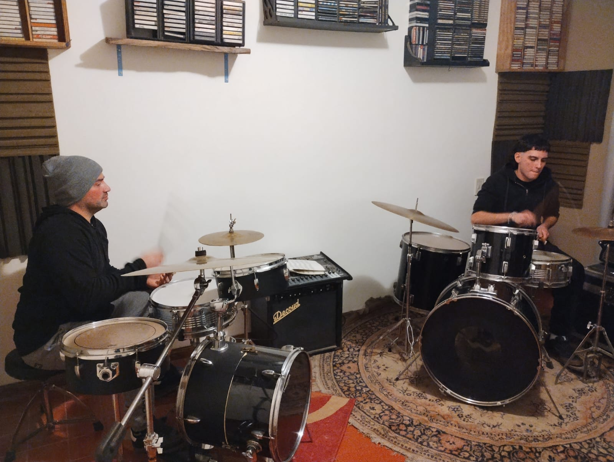

Batería
Trabajá ritmo, coordinación y técnica mientras aprendés a tocar canciones y desarrollar una práctica constante.

Clases presenciales en NovaStage
Elegí tu instrumento, explorá tu sonido y avanzá a tu propio ritmo con clases pensadas para desarrollar técnica, creatividad y confianza.

Encontrá tu instrumento
No necesitás experiencia previa. Las clases se adaptan al nivel, los intereses y los objetivos de cada alumno.
Trabajá ritmo, coordinación y técnica mientras aprendés a tocar canciones y desarrollar una práctica constante.
Explorá melodía, armonía y acompañamiento de una forma práctica y progresiva.
Aprendé a construir bases, acompañar canciones y comprender el rol del bajo dentro de una banda.
Desarrolla técnica, acordes y riffs trabajando con música que conecte con tus propios intereses.
Aprendé acordes, ritmos y acompañamientos para empezar a tocar canciones desde las primeras clases.
Trabajá respiración, afinación, interpretación y expresión para conocer y desarrollar tu propia voz.
Una forma accesible de comenzar a explorar acordes, ritmo y acompañamiento musical.
Una propuesta a tu ritmo
El aprendizaje se adapta al nivel, los intereses y los objetivos de cada alumno, buscando que la música esté presente desde el comienzo.
Todas las clases se realizan actualmente de manera presencial, en un espacio preparado para aprender, practicar y hacer música.
La mayoría de las clases son individuales, permitiendo adaptar contenidos y tiempos al proceso de cada alumno.
Hay propuestas grupales de canto y experiencias donde los alumnos pueden aprender compartiendo y haciendo música con otros.
Los días y horarios se acuerdan según la disponibilidad del profesor y del alumno.
Nuestra forma de enseñar
En NovaStage buscamos que cada alumno pueda hacer música desde el comienzo, desarrollar curiosidad y descubrir de qué manera la práctica constante transforma lo que parecía difícil en algo posible.
No se trata solamente de incorporar técnica. Cada clase propone explorar, equivocarse, volver a intentar y construir herramientas que permitan avanzar de acuerdo con los intereses y objetivos de cada persona.
La práctica musical forma parte del aprendizaje desde el comienzo, sin esperar a dominar primero toda la teoría.
Tus gustos e intereses musicales son parte del proceso y ayudan a encontrar un camino propio.
El progreso aparece con la práctica, la dedicación y pequeños avances sostenidos en el tiempo.
Tu primera experiencia en NovaStage
Vení a conocer el espacio, contanos qué música te gusta y qué te gustaría aprender. La primera clase sirve para conocernos, conversar sobre tus objetivos y encontrar una propuesta que se adapte a vos.
Quiero coordinar mi primera clase